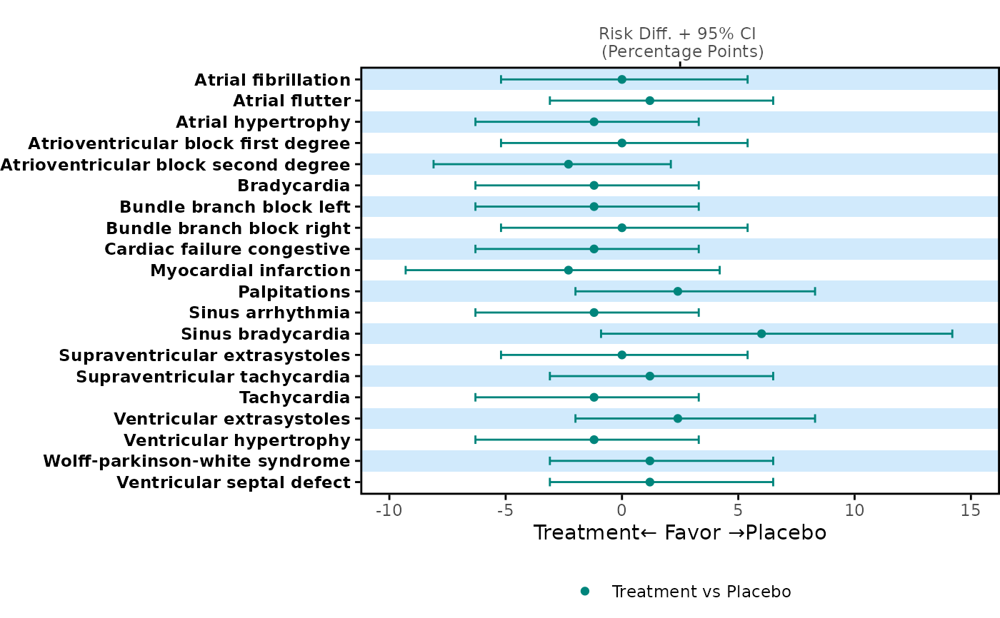

Create a plot to display risk difference for each item.
Usage
plot_errorbar(
tbl,
ci_cols = c("diff_1", "lower_1", "upper_1"),
y_var,
errbar_width = 0.4,
color = NULL,
shape = NULL,
label,
x_breaks = NULL,
grp_abbrev = "paired",
favor_direction = "negative",
vline = NULL,
line_type = 1,
title = "Risk Diff. + 95% CI \n (Percentage Points)",
background_color = c("#69B8F7", "#FFFFFF"),
background_alpha = 0.3,
theme = theme_panel(show_text = TRUE, show_ticks = TRUE),
legend_nrow = 1
)Arguments
- tbl
A data frame selected from input data set to display on this plot. y and x variables are required.
- ci_cols
A character vector of columns for a risk difference to be used for a plot. Need 3 columns, risk difference, lower bound, and upper bound.
- y_var
A character string that specifies a variable to be displayed on the y-axis.
- errbar_width
A numeric value to define the error bar width. Default is 0.4. Value of this argument will be a half length of the error bar, for example,
errorbar_width = 0.2means half of the error bar width is 0.2 unit length. If y = 4, the error bar will range from y = 3.8 to y = 4.2.- color
Color for each treatment group.
- shape
Shape for each treatment group. Default is circle and square. Input values could be either a character or numeric value, For details, see https://ggplot2.tidyverse.org/articles/ggplot2-specs.html.
- label
A character vector of labels for each treatment group. The control group label should be specified as the last element of the vector.
- x_breaks
A numeric vector for x-axis breaks. Default is
NULL, which uses a default ggplot2 x-axis breaks presentation.- grp_abbrev
A character vector for displaying the treatment groups on a favor bar. If
grp_abbrev = "paired", treatment label on the error bar will be the same as in thelabelargument. Ifgrp_abbrev = "none", the error bar will not be shown. Also, for customized terms, users can provide an alternative vector of treatment labels. Default is"paired".- favor_direction
The position of a favor label under the condition "comparison is treatment – control". For AEs,
favor_directionshould be"negative"; for efficacy,favor_directionshould be"positive".- vline
Vertical reference line position. Default is
NULL. Users can define one or multiple numeric values in a vector as a reference line position.- line_type
Reference line type. Default is solid line. Users can define one or multiple line types in a vector (can be numeric such as 1, 2, 3 or character such as
"solid","dashed"). The values will be recycled and the order will be consistent with the argumentvline.- title
Plot title. Default is
"Risk Diff. + 95% CI \\n (Percentage Points)".- background_color
Plot background color. Default is
c("#69B8F7", "#FFFFFF"), which are pastel blue and white. The value of this argument is used as input for thebackground_colorargument inbackground_panel().- background_alpha
Opacity of the background. Default is 0.3. The value of this argument is the input for
background_alphaargument inbackground_panel().- theme
Panel theme, including the y-axis text, ticks, and plot margin. Default is
theme_panel(show_text = TRUE, show_ticks = TRUE). For more details, refer totheme_panel.- legend_nrow
Integer, the number of rows for a legend display. Must be smaller than or equal to the number of the treatment groups. To omit the legend, set this to
NULL. Default is 1.
Examples
forestly_adsl$TRTA <- factor(
forestly_adsl$TRT01A,
levels = c("Xanomeline Low Dose", "Placebo"),
labels = c("Low Dose", "Placebo")
)
forestly_adae$TRTA <- factor(
forestly_adae$TRTA,
levels = c("Xanomeline Low Dose", "Placebo"),
labels = c("Low Dose", "Placebo")
)
meta <- meta_forestly(
dataset_adsl = forestly_adsl,
dataset_adae = forestly_adae,
population_term = "apat",
observation_term = "wk12",
parameter_term = "any;rel;ser"
) |>
prepare_ae_forestly() |>
format_ae_forestly()
meta_any <- meta$tbl[1:20, ] |> dplyr::filter(parameter == "any")
meta_any |>
dplyr::select(name, diff_1, lower_1, upper_1) |>
plot_errorbar(
y_var = "name",
ci_cols = c("diff_1", "lower_1", "upper_1"),
label = c("Treatment", "Placebo")
)
